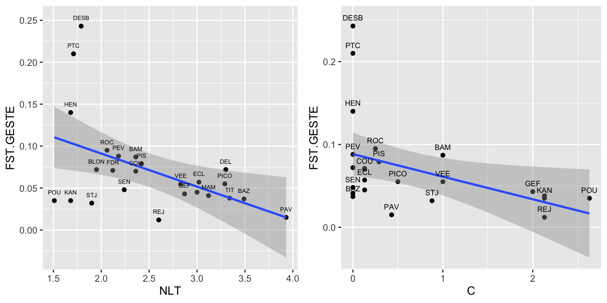
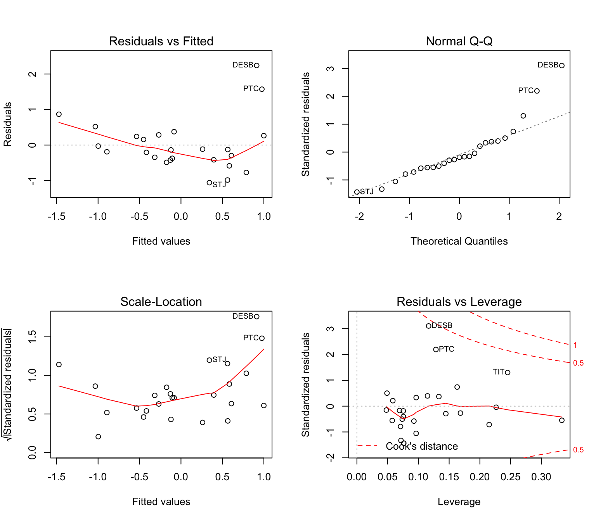
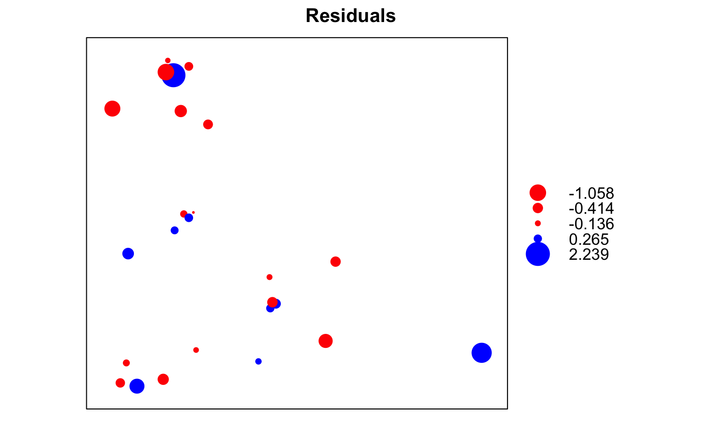
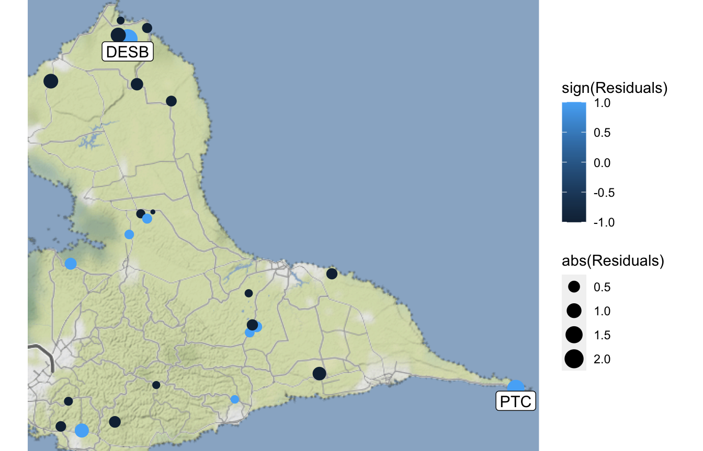
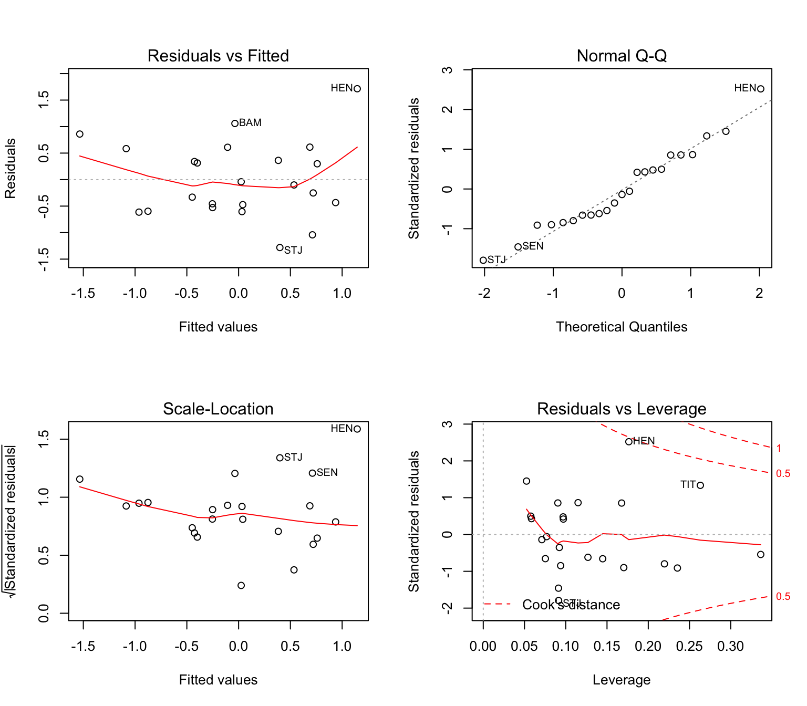
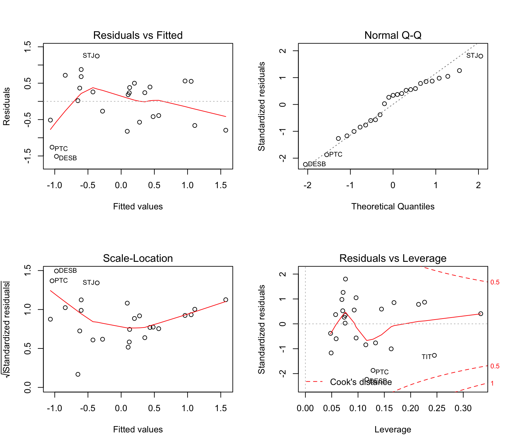
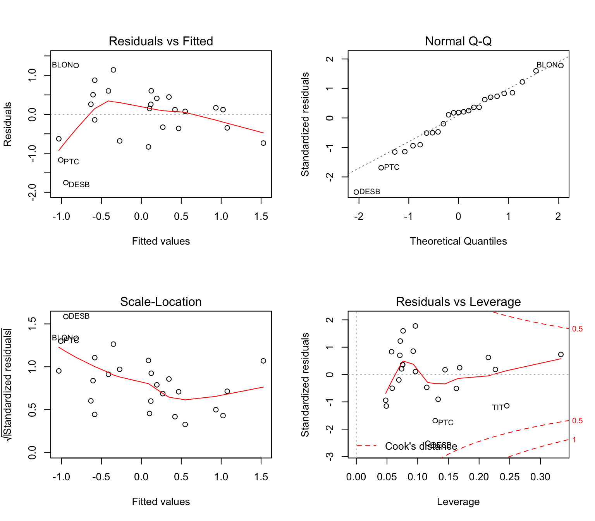

Week4_vignette.RmdThis worked example shows how to:
Lamy et al. (2012) sampled the freshwater snail Drepanotrema depressissimum in a fragmented landscape of tropical ponds on the island of Guadeloupe in the French West Indies. They used a spatially and temporally stratified sampling design with a total of 25 sites, where 12 sites formed four well-separated clusters of three neighbouring sites each, to study spatial variability, and 12 sites spread across the island were sampled in multiple years to study temporal variability. For each site and year, 22 - 34 individuals were genotyped at ten microsatellite loci. The species is diploid, hermaphroditic, and outcrossed.
A key characteristic of this system is the presence of a dry and a rainy season. In the dry season, many ponds can dry out, possibly causing extinction of the local snail populations. During the rainy season, ponds refill and can even overflow, thereby becoming connected through the hydrological network. During this rainy season, dispersal between ponds may occur.
dd.ecogen: The dataset ‘dd.ecogen’ with genetic data for 1270 snails from 42 populations is included in package ‘LandGenCourse’. To load it, type: data(dd.ecogen).
dd.site: Population-level data from Tables 2 - 5 of Lamy et al. (2012) are available in dataset ‘dd.site’ (with 25 variables) in package ‘LandGenCourse’. To load it, type: data(dd.site).
Lamy, T., Pointier, J. P., Jarne, P. and David, P. (2012), Testing metapopulation dynamics using genetic, demographic and ecological data. Molecular Ecology, 21: 1394–1410. doi:10.1111/j.1365-294X.2012.05478.x
All required packages should have been installed already when you installed ‘LandGenCourse’.
Let’s import the genetic data (spatial and temporal data sets combined, 42 combinations of site and year). Use ‘?dd.ecogen’ to check helpfile with data set desription.
The ‘ecogen’ object ‘dd.ecogen’ contains individual-level data in the following slots:
data(dd.ecogen, package = "LandGenCourse") dd.ecogen
##
## || ECOGEN CLASS OBJECT ||
## ----------------------------------------------------------------------------
## Access to slots: <ecoslot.> + <name of the slot> + <(name of the object)>
## See: help("EcoGenetics accessors")
## ----------------------------------------------------------------------------
##
## | slot XY: | --> 1270 x 2 coordinates
## | slot P: | --> 0 x 0 phenotypic variables
## | slot G: | --> 1270 x 10 loci >> ploidy: 2 || codominant
## | slot A: | --> 1270 x 372 alleles
## | slot E: | --> 0 x 0 environmental variables
## | slot S: | --> 1270 x 4 structures >> 4 structures found
## | slot C: | --> 0 x 0 variables
## | slot OUT: | --> 0 results
## ----------------------------------------------------------------------------?dd.ecogenWe also import site-level data from Tables 2 - 5 in Lamy et al. (2012). Use ‘?dd.site’ to check helpfile with data set desription of the variables.
## # A tibble: 42 x 24
## SiteID SITE YEAR Spatial MultiYear APE Cluster n RA He f
## <chr> <fct> <int> <lgl> <lgl> <lgl> <fct> <int> <dbl> <dbl> <dbl>
## 1 PICO2… PICO 2006 FALSE TRUE FALSE <NA> 34 11.2 0.897 0.038
## 2 PICO2… PICO 2007 FALSE TRUE FALSE <NA> 24 11.4 0.911 0.022
## 3 PICO2… PICO 2009 TRUE TRUE FALSE <NA> 32 11.4 0.896 0.024
## 4 ROC20… ROC 2006 TRUE TRUE FALSE <NA> 32 11.2 0.831 0.005
## 5 ROC20… ROC 2007 FALSE TRUE FALSE <NA> 32 11.0 0.82 0.018
## 6 SEN20… SEN 2006 FALSE TRUE FALSE <NA> 32 11.2 0.876 -0.008
## 7 SEN20… SEN 2007 TRUE TRUE FALSE <NA> 30 11.6 0.88 0.046
## 8 VEE20… VEE 2006 FALSE TRUE FALSE <NA> 31 10.5 0.864 0.034
## 9 VEE20… VEE 2007 FALSE TRUE FALSE <NA> 32 11.3 0.854 0.044
## 10 VEE20… VEE 2008 TRUE TRUE FALSE <NA> 31 11.2 0.871 0.014
## # … with 32 more rows, and 13 more variables: s <dbl>, Type <fct>,
## # FST.GESTE <dbl>, Size <dbl>, V <dbl>, C <dbl>, Stab <dbl>, D <int>,
## # APA <int>, NLT <dbl>, Fst.temp <dbl>, Longitude <dbl>, Latitude <dbl>?dd.siteQuestions: with the help file for ‘dd.site’, check the meaning of the following explanatory variables:
Your hypothesis: which explanatory variables would you expect to affect:
In the following, we’ll perform three types of analyses:
How similar are populations from nearby habitat patches compared to populations across the island? To answer this question, we perform a hiearchical AMOVA (analysis of molecular variance) with individuals from 12 populations that form 4 clusters with 3 populations each.
First, we need to extract the samples that belong to the hierarchical data set. There are four clusters: “North”, “East”, “Center” and “South”. We are looking for the observations where the variable “Cluster” has one of these four values, all other observations will have a missing value for “Cluster”. We can use ‘!is.na’ to extract all rows with non-missing values. Then we convert to a ‘genind’ object.
dd.ecogen.Cluster <- dd.ecogen[!is.na(dd.ecogen[["S"]]$Cluster),] dd.genind.Cluster <- EcoGenetics::ecogen2genind(dd.ecogen.Cluster)
## Loading required package: adegenet## Loading required package: ade4## Registered S3 method overwritten by 'spdep':
## method from
## plot.mst ape##
## /// adegenet 2.1.3 is loaded ////////////
##
## > overview: '?adegenet'
## > tutorials/doc/questions: 'adegenetWeb()'
## > bug reports/feature requests: adegenetIssues()There are several implementations of AMOVA in R, e.g. in pacakges ‘ade4’, ‘pegas’ and ‘vegan’. The ‘ade4’ implementation is closest to the original implementation in Arlequin. Package ‘poppr’ has a wrapper function ‘poppr.amova’ that makes it easy to perform AMOVA with the ‘ade4’ or with the ‘pegas’ implementation (see ‘?poppr.amova’ for a discussion of their pros and cons). Here we’ll use ‘ade4’.
First we run the AMOVA and estimate the percent of molecular variance at each hierarchical level.
amova.result <- poppr::poppr.amova(dd.genind.Cluster, hier = ~ Cluster/SITE, within=FALSE, method = "ade4")
## Registered S3 method overwritten by 'pegas':
## method from
## print.amova ade4##
## No missing values detected.amova.result## $call
## ade4::amova(samples = xtab, distances = xdist, structures = xstruct)
##
## $results
## Df Sum Sq Mean Sq
## Between Cluster 3 67.27429 22.424764
## Between samples Within Cluster 8 158.37917 19.797396
## Within samples 353 1563.08216 4.427995
## Total 364 1788.73562 4.914109
##
## $componentsofcovariance
## Sigma %
## Variations Between Cluster 0.02770227 0.5582719
## Variations Between samples Within Cluster 0.50644882 10.2062461
## Variations Within samples 4.42799478 89.2354820
## Total variations 4.96214587 100.0000000
##
## $statphi
## Phi
## Phi-samples-total 0.107645180
## Phi-samples-Cluster 0.102635446
## Phi-Cluster-total 0.005582719Then we test whether each variance component is statistically significant (i.e., significantly larger than zero).
amova.test <- ade4::randtest(amova.result, nrepet = 999) amova.test
## class: krandtest lightkrandtest
## Monte-Carlo tests
## Call: randtest.amova(xtest = amova.result, nrepet = 999)
##
## Number of tests: 3
##
## Adjustment method for multiple comparisons: none
## Permutation number: 999
## Test Obs Std.Obs Alter Pvalue
## 1 Variations within samples 4.42799478 -84.81343 less 0.001
## 2 Variations between samples 0.50644882 55.27578 greater 0.001
## 3 Variations between Cluster 0.02770227 1.65383 greater 0.062Questions:
What factors explain site-specific Fst? Let’s consider the key micro-evolutionary processes:
First, we create a new SpatialPointsDataFrame with the subset of data for the spatial analysis (25 ponds, one year each).
dd.spatial <- dd.site[dd.site@data$Spatial==TRUE, ]
Let’s start with a correlation matrix.
## FST.GESTE NLT C D
## FST.GESTE 1.00000000 -0.48565247 -0.43104600 0.02768978
## NLT -0.48565247 1.00000000 -0.08369541 0.10242973
## C -0.43104600 -0.08369541 1.00000000 -0.32078070
## D 0.02768978 0.10242973 -0.32078070 1.00000000Questions:
Let’s plot the response variable FST.GESTE against each of the two predictors NLT and C. Here, we use functions from the package ggplot2 (already loaded) to define two ggplot objects NLT.plot and C.plot, then we plot them side-by-side with the function cowplot::plot_grid.
dd.spatial@data, the x-axis as variable NLT, the y-axis as variable FST.GESTE, and the labels as variable SITE.geom_smooth), make it linear (method = lm) and add a shaded area for plus/minus 1 SE of the mean for a given value of x (se = TRUE).geom_label), define their size (size), and move them up a little along the y-axis (nudge_y)NLT.plot <- ggplot(dd.spatial@data, aes(x=NLT, y=FST.GESTE, label=SITE)) + geom_point() + geom_smooth(method = lm, se = TRUE) + geom_text(size=2, nudge_x=0, nudge_y=0.01, check_overlap=TRUE) C.plot <- ggplot(dd.spatial@data, aes(x=C, y=FST.GESTE, label=SITE)) + geom_point() + geom_smooth(method = lm, se = TRUE) + geom_text(size=2.5, nudge_x=0, nudge_y=0.01, check_overlap=TRUE) cowplot::plot_grid(NLT.plot, C.plot)
## `geom_smooth()` using formula 'y ~ x'
## `geom_smooth()` using formula 'y ~ x'
The two predictors ‘NLT’ and ‘C’ are not strongly correlated. We’ll fit a regression model with both predictors. Here we use function ‘scale’ to standardize each variable, so that we can interpret the regression slope coefficients as partial correlation coefficients (beta coefficients).
##
## Call:
## lm(formula = scale(FST.GESTE) ~ scale(NLT) + scale(C), data = dd.spatial)
##
## Residuals:
## Min 1Q Median 3Q Max
## -1.0576 -0.4142 -0.1361 0.2653 2.2394
##
## Coefficients:
## Estimate Std. Error t value Pr(>|t|)
## (Intercept) -2.576e-17 1.535e-01 0.000 1.00000
## scale(NLT) -5.254e-01 1.572e-01 -3.342 0.00296 **
## scale(C) -4.750e-01 1.572e-01 -3.021 0.00628 **
## ---
## Signif. codes: 0 '***' 0.001 '**' 0.01 '*' 0.05 '.' 0.1 ' ' 1
##
## Residual standard error: 0.7676 on 22 degrees of freedom
## Multiple R-squared: 0.4599, Adjusted R-squared: 0.4108
## F-statistic: 9.367 on 2 and 22 DF, p-value: 0.00114Is the model valid? Let’s check the residual plots:

If we had more than two predictors, it would be a good idea to calculate variance inflation factors. The package ‘car’ has a function ‘vif’ that takes as argument a fitted model. Here, both predictors have VIF = 1.007, which indicates no collinearity.
car::vif(mod.diff)
## scale(NLT) scale(C)
## 1.007054 1.007054Let’s plot the residuals in space. The function ‘bubble’ from the package ‘sp’ evaluates the projection information of the SpatialPointsDataFrame ‘dd.spatial’.
dd.spatial@data$Residuals <- mod.diff$residuals sp::bubble(dd.spatial, zcol = "Residuals", col = c("red", "blue"))

Or on a map from the internet, using ‘qmplot’ from the ‘ggmap’ package. It expects lat-lon coordinates that are stored in a data frame, not a SpatialPointsDataFrame. If we convert ‘dd.spatial’ with the function ‘as.data.frame’, R will return a data frame with the site variables and with the coordinates appended as additional columns. The code below does the following (see Week 4 video, part 2):
a that lists identifies the two potential outliers by their SITE names (logical),a2 that contains the row numbers of the potential outliers,myMap.size affects font size and label.padding determines the size of the textbox for the label.a <- is.element(dd.spatial@data$SITE, c("DESB", "PTC")) a2 <- c(1:nrow(dd.spatial@data))[a] myMap <- ggmap::qmplot(Longitude, Latitude, data = as.data.frame(dd.spatial), source = "stamen", maptype = "toner-lite", force=TRUE, col = sign(Residuals), size = abs(Residuals)) myMap + ggplot2::geom_label(data = as.data.frame(dd.spatial[a2,]), mapping = ggplot2::aes(Longitude, Latitude, label = SITE), size = 4, label.padding = unit(0.2, "lines"), col = "black", vjust = 0, nudge_x = 0, nudge_y = -0.015)

Exports the last plot as a ‘png’ (Portable Network Graphics) file, specifying canvas size and resolution. To run the code, uncomment by removing ‘#’ at the beginning of each line.
#require(here) #if(!dir.exists(paste0(here(),"/output"))) dir.create(paste0(here(),"/output")) #ggplot2::ggsave(paste0(here(),"/output/ResidualMap.png"), # width = 7, height = 5.5, units = "in", dpi = 300)
What might explain the large residuals for the two sites ‘PTC’ and ‘DESB’?
We can use the same index ‘a’ to exclude the potential outliers from the regression model:
mod.diff.minus2 <- lm(scale(FST.GESTE) ~ scale(NLT) + scale(C), data=dd.spatial[-a2,]) summary(mod.diff.minus2)
##
## Call:
## lm(formula = scale(FST.GESTE) ~ scale(NLT) + scale(C), data = dd.spatial[-a2,
## ])
##
## Residuals:
## Min 1Q Median 3Q Max
## -1.2815 -0.5002 -0.1009 0.4732 1.7142
##
## Coefficients:
## Estimate Std. Error t value Pr(>|t|)
## (Intercept) 3.490e-17 1.562e-01 0.000 1.00000
## scale(NLT) -5.096e-01 1.622e-01 -3.142 0.00514 **
## scale(C) -5.761e-01 1.622e-01 -3.552 0.00200 **
## ---
## Signif. codes: 0 '***' 0.001 '**' 0.01 '*' 0.05 '.' 0.1 ' ' 1
##
## Residual standard error: 0.7493 on 20 degrees of freedom
## Multiple R-squared: 0.4896, Adjusted R-squared: 0.4386
## F-statistic: 9.593 on 2 and 20 DF, p-value: 0.001199
## RA He Size NLT C D
## RA 1.00000000 0.95151016 0.3482453 0.51343861 0.46576979 -0.09856668
## He 0.95151016 1.00000000 0.3057086 0.49851503 0.45206733 -0.09593604
## Size 0.34824532 0.30570855 1.0000000 0.76128271 -0.17765815 0.30002700
## NLT 0.51343861 0.49851503 0.7612827 1.00000000 -0.08369541 0.10242973
## C 0.46576979 0.45206733 -0.1776581 -0.08369541 1.00000000 -0.32078070
## D -0.09856668 -0.09593604 0.3000270 0.10242973 -0.32078070 1.00000000Questions:
For allelic richness:
##
## Call:
## lm(formula = scale(RA) ~ scale(NLT) + scale(C), data = dd.spatial)
##
## Residuals:
## Min 1Q Median 3Q Max
## -1.5115 -0.5140 0.2356 0.4995 1.2462
##
## Coefficients:
## Estimate Std. Error t value Pr(>|t|)
## (Intercept) -1.238e-16 1.441e-01 0.000 1.00000
## scale(NLT) 5.563e-01 1.476e-01 3.770 0.00106 **
## scale(C) 5.123e-01 1.476e-01 3.472 0.00217 **
## ---
## Signif. codes: 0 '***' 0.001 '**' 0.01 '*' 0.05 '.' 0.1 ' ' 1
##
## Residual standard error: 0.7204 on 22 degrees of freedom
## Multiple R-squared: 0.5243, Adjusted R-squared: 0.481
## F-statistic: 12.12 on 2 and 22 DF, p-value: 0.0002825
For gene diversity (expected heterozygosity):
##
## Call:
## lm(formula = scale(He) ~ scale(NLT) + scale(C), data = dd.spatial)
##
## Residuals:
## Min 1Q Median 3Q Max
## -1.7545 -0.3619 0.1211 0.4458 1.2550
##
## Coefficients:
## Estimate Std. Error t value Pr(>|t|)
## (Intercept) -1.381e-16 1.486e-01 0.000 1.00000
## scale(NLT) 5.401e-01 1.522e-01 3.549 0.00180 **
## scale(C) 4.973e-01 1.522e-01 3.268 0.00352 **
## ---
## Signif. codes: 0 '***' 0.001 '**' 0.01 '*' 0.05 '.' 0.1 ' ' 1
##
## Residual standard error: 0.7429 on 22 degrees of freedom
## Multiple R-squared: 0.4941, Adjusted R-squared: 0.4481
## F-statistic: 10.74 on 2 and 22 DF, p-value: 0.0005559
Several patches fell dry between observation years, which is assumed to signify extinction of the local population. Does genetic evidence support this interpretation, i.e., is there genetic evidence of bottlenecks or founder effects in D. depressissimum?
dd.temporal <- dd.site[dd.site@data$MultiYear==TRUE,] cor(dd.temporal@data[, c("Fst.temp", "APE", "NLT", "C")], use="pairwise.complete")
## Fst.temp APE NLT C
## Fst.temp 1.0000000 0.29379662 -0.10494809 -0.3356817
## APE 0.2937966 1.00000000 -0.07420821 -0.4927664
## NLT -0.1049481 -0.07420821 1.00000000 0.3103541
## C -0.3356817 -0.49276638 0.31035409 1.0000000We can compare a number of competing models using the Akaike Information Criterion (AIC). Models with lower AIC are better (see Week 12).
##
## Call:
## lm(formula = scale(Fst.temp) ~ scale(APE), data = dd.temporal)
##
## Residuals:
## Min 1Q Median 3Q Max
## -1.0290 -0.5094 -0.3566 0.2140 2.0886
##
## Coefficients:
## Estimate Std. Error t value Pr(>|t|)
## (Intercept) -0.04099 0.29246 -0.140 0.891
## scale(APE) 0.27599 0.28396 0.972 0.354
##
## Residual standard error: 1.003 on 10 degrees of freedom
## (17 observations deleted due to missingness)
## Multiple R-squared: 0.08632, Adjusted R-squared: -0.005052
## F-statistic: 0.9447 on 1 and 10 DF, p-value: 0.354mod.Fst.temp.C <- lm(scale(Fst.temp) ~ scale(APE) + scale(C), data=dd.temporal) mod.Fst.temp.NLT <- lm(scale(Fst.temp) ~ scale(APE) + scale(NLT), data=dd.temporal) mod.Fst.temp.both <- lm(scale(Fst.temp) ~ scale(APE) + scale(NLT) + scale(C), data=dd.temporal) AIC(mod.Fst.temp, mod.Fst.temp.C, mod.Fst.temp.NLT, mod.Fst.temp.both)
## df AIC
## mod.Fst.temp 3 37.92714
## mod.Fst.temp.C 4 39.27770
## mod.Fst.temp.NLT 4 39.83549
## mod.Fst.temp.both 5 41.27462The best model includes neither ‘C’ nor ‘NLT’. Note that ‘APE’ is a binary variable, so in essence we’re performing a t-test here.
res.Fst.temp <- t.test(Fst.temp ~ APE, data=dd.temporal, alternative = "less") res.Fst.temp
##
## Welch Two Sample t-test
##
## data: Fst.temp by APE
## t = -0.94604, df = 7.893, p-value = 0.1861
## alternative hypothesis: true difference in means is less than 0
## 95 percent confidence interval:
## -Inf 0.01085372
## sample estimates:
## mean in group FALSE mean in group TRUE
## 0.0080 0.0192The effect is not statistically significant. Does that mean that we found no effect of apparent population extinctions on temporal Fst? Let’s check effect size. For means, Cohen’s effect size is measured by d (which is measured in units of standard deviations):
We can let R calculate effect size for us:
##
## Cohen's d
##
## d estimate: -0.5691221 (medium)
## 95 percent confidence interval:
## lower upper
## -1.8992165 0.7609722So, we actually found a ‘medium’ effect (more than 0.5 standard deviations difference between group means). Maybe sample size was too small to have sufficient power?
Let’s check sample size:
##
## FALSE TRUE
## 7 5Ah, that explains a lot. There were only 5 sites with apparent extinction, and 7 without.
Given that sample size, what was the statistical power of our test to detect at least a large effect (d = - 0.8), i.e., be able to reject the null hypothesis if such an effect is present in the population from which we sampled?
pwr::pwr.t2n.test(n1=7, n2=5, d=-0.8, alternative = "less")
##
## t test power calculation
##
## n1 = 7
## n2 = 5
## d = -0.8
## sig.level = 0.05
## power = 0.3552962
## alternative = lessSo the power to detect at least a large effect, if it exists in the population, was only 0.355, way below the 0.8 (or even 0.95) that we would want to see. For a medium effect, the power is even smaller.
How large a sample would we have needed in each group to achieve a power of 0.8 to detect a large effect? And for a medium effect?
pwr::pwr.t.test(power = 0.8, d = -0.8, alternative = "less")
##
## Two-sample t test power calculation
##
## n = 20.03277
## d = -0.8
## sig.level = 0.05
## power = 0.8
## alternative = less
##
## NOTE: n is number in *each* grouppwr::pwr.t.test(power = 0.8, d = -0.5, alternative = "less")
##
## Two-sample t test power calculation
##
## n = 50.1508
## d = -0.5
## sig.level = 0.05
## power = 0.8
## alternative = less
##
## NOTE: n is number in *each* groupMore than 20 sites in each group would have been needed to detect a large effect, or more than 50 per group to detect a medium effect, with a power of 80%.
Hence, these particular results are inconclusive. There was a trend showing a large effect size but power was very low. This aspect of the study should ideally be repeated with a larger sample size before reaching any conclusions.
Note however that using additional evidence (e.g., population assignment tests), Lamy et al. (2012) concluded that extinctions were in fact less common in this system than previously assumed – in many cases of apparent extinction, individuals may still be present but just not detected.
Task: Build on your previous exercises and plot the sites on a map downloaded from the internet. Explore the relationships between Hexp, census population size and percent forest cover within 500 m of the site (forest may act as a barrier for grassland plants).
Hints:
dplyr and ggplot2. Alternatively, you can use :: to call functions from packages.Pulsatilla.longlat <- readRDS(paste0(here::here(), "/output/Pulsatilla.longlat.rds"))
myMap <- ggmap::qmplot(x=meanX, y=meanY, data = as.data.frame(Pulsatilla.longlat), source = "stamen", maptype = "toner-lite") Next, modify code from section 3.d to add labels for all sites and plot the map.Combine data: Use the function dplyr::left_join to add the variables from the dataset H.pop to the data frame in the @data slot of Pulsatilla.longlat. Notes:
factor, the other is character), it is best to change the format of one (e.g., with as.character) before doing the left-join.ggplot2 package, or use base R functions.Regression analysis: Adapt code from section 3.c to perform a regression of Hexp (response variable) on the predictor nIndiv. Create residual plots and inspect them. What is the main issue here?
Questions: There is one influential point in the regression analysis: